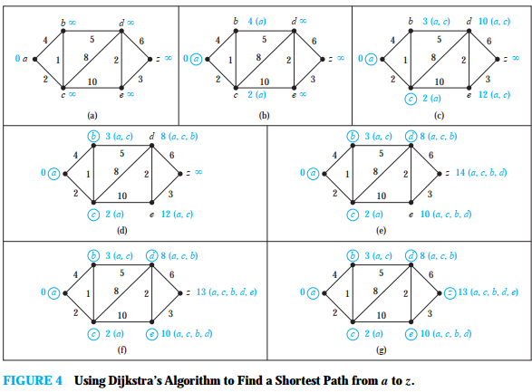

Многу проблеми можат да се моделираат со користење на граф со доделување на тежина на ребрата. Како пример, ќе го разгледаме моделот на авио линии. Градовите ги претставуваме со јазли а летовите со ребра. Проблемите каде се вклучуваа и растојанието помеѓу градовите може да се моделира со доделување на растојанието на ребрата. Проблемите каде се вклучува времето на летот со модели кои на ребрата му доделуваат време на лет. Проблемот кој вклучува цена на летот со модел каде на реброто му седоделува цената на летот. На сликата 1 се претставени овие графови.
Графови кои имаат доделоно броеви на секое ребро се викаат тежински графови.
Дефиниција 1
Графот `G=(V, E)`, над кој е дефинирана ф-ја на тежина `w: E -> RR` која ги пресликува ребрата во тежини кои се реални броеви се нарекува тежински граф.
Тежините на ребрата се различна метрика од растојанијата: време, цена, загуба, должина...
Дефиниција 2
Тежина на пат `p =(v_0, v_1, ... v_k)` е сумата од сите тежини од
неговите составни ребра:
`w(p) = sum_(i=1)^k w(v_(i-1), v_i)`
Tежина на најкраток пат од `u` до `v` e: `delta (u, v) = {(min {w(p): u -> v}),(oo: ! (u -> v)):}`
Должина на пат
Дефиниција 2
Должина на пат не е бројот на ребра на тој пат, туку сумата на должините на ребрата долж патот.
Пример 1. Која е должината на најкраткиот пат помеѓу `a` и `z` во тежинскиот граф на сликата 3?
Решение: Иако најкраткиот пат лесно се наоѓа со преглед на графот, ќе искажеме некои идеи кои се корисни за разбирањето на алгоритамот на Дикстра. Проблемот ќе го решиме со одредување на должината на најкраткиот пат од `a` до последователните јазли се додека не се стаса до `z`.
Единствените патишта кои отпочнуваат во `a` и кои не содржат јазли различни од `a` се фомираат со додавање на ребро кое го содржи јазелот `a` како крајна точка. Овие патишта имаат само еден јазол. Овие патишта се `a, b` со должина 4 и `a, d` со должина 2. Од тука следи дека `d` е најблизок јазол до `a`, и дека најкраткиот пат од `a` до `d` има должина 2.
Сега можеме да го најдеме вториот најблизок јазол со елиминирање на сите патишта кои отпочнуваат со најкраткиот пат од `a` до `a` во множеството `{a, d}`, проследен со ребро кое има крајна точка во `{a, d}` а другата крајна точка не е во ова множество. Постојат два вакви пата кои треба да се земат во обзир, `a, d, e` со должина 5 и `a, b` со должина 4. Од тука се добива дека вториот најблизок јазол е `b` и најкраткиот пат од `a` до `b` има должина 4.
За да се најде третиот најблизок јазол до `a`, треба да се елиминираат само патиштата кои отпочнуваат со најкраткиот пат од `a` до јазол во множеството `{a, d, b}` проследен со ребро кое има една крајна точка во множеството `{a, d, b}` и другата крајна точка вон ова множество. Постојат три вакви пата, `a, b, c` со должина 7, `a, b, e` со должина 7,и `a, d, e` со должина 5. Бидејки најкраткиот пат од овие патишта е `a, d, e`, третиот најблизок јазол до `a` e `e` и должината на најкраткиот пат од `a` до `e` e 5.
Да се најде четвртиот најблизок јазол до `a`, треба да се елиминираат само патиштата кои почнуваат со најкраткиот пат од `a` до јазол во множеството `{a, d, b, e}`, проследен со ребро кое има една крајна точка во множеството `{a, d, b, e}` и друга вон ова множество. Постојат два вакви пата `a, b, c, z` со должина 9 и `a, d, e, z` со должина 6. Бидејки најкраткиот пат е `a, d, e, z`, четвртиот најблизок јазол до `a` е `z` и должината на најкраткиот пат е 6.
Примерот ги илустрира општите принципи кои се користат во алгоритамот на Дикстра.
Сега ќе го разгледаме општиот проблем на наоѓање на должината на најкраткиот пат помеѓу `a` и `z` во неоирентиран сврзан едноставен тежински граф. Алгоритамот се базира на серија од уточнување. Множество на раздбоени јазли се формира со додавање на јазол на секое уточнување. Пресметката на тежината се врши при секое уточнување. Јазелот кој се додава при секое уточнување има најмала тежина.
Почетниот јазол е на растојание `0` и се обележува со `0`, сите други се обележуваат со
бескрај `oo`.
`L_0(a) = 0, L_0(v) = oo; v != a`
Во секој чекор се формира множество темиња на следниов начин:
`S_0 = ∅`.
Множеството `S_k` се добива од множеството `S_(k-1)` со додавање на јазол во `S_(k−1)` со
најмала тежина.
Ги обновуваме само јазлите кои не се во `S_k`, па вредноста на темињата кои се во `S_k` не се менува.
Нека `v` е јазол кое не е во `S_k`. За да се ажурира вредноста на `v, L_k(v)`, т.е должината на најкраткиот пат од `a` до `v` кој содржи само јазли од `S_k` можеме да го искористиме `S_(k-1).
`L_k(a, v) = min{L_(k−1)(a, v), L_(k−1)(a, u) + w(u, v)}`,
Пример 2. Со алгоритамот на Дикстра да се одреди должината на најкраткиот пат помеѓу јазлите `a` и `z` во тежинскиот граф прикажан на сликата 4(а).
Решение: Чекорите на алгоритамот се прикажани на сликата 4. При секое уточнување на алгоритамот јазлите од множеството `Sk` се заокрожуваат. Најкраткиот пат од `a` до секој јазол кој ги содржи само јазлите од `S_k` се означува за секое уточнување. Алгоритамот завршува кога доаѓаме до јазолот `z`. На овој начин најдовме дека најкраткиот пат e `a, c, b, d, e, z,` и е со должина 13.
Нaпомена: Некогаш е подобро записот да се чува во табела наместо во секој чекор да се црта графот одново.
Проблем на трговски патник
Трговски патник сака да посети `n` градови само по еднаш и да се врати во својата почетна позиција.
По кој редослед треба да ги посетува овие градови за да помине минимален пат?
Да се испитаат сите можни начини и да се најде најкраткиот пат?

Пример: На сликата има вкупно 24 начини, затоа што секој циклус има свој обратен, треба да се испитаат само 12.
Проблемот е да се најде Хамилтонов циклус со најмала тежина.
Нема решение кое има помала сложеност од eкспоненцијална.
засега се познати само алгоритми со експоненцијална комплексност
---------- EOP ----------